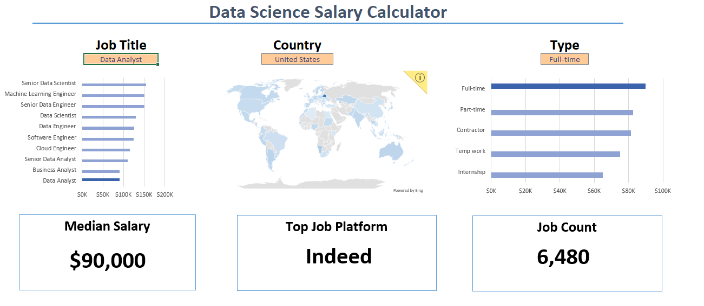

Data & tech stack
SQL
Python
Advanced MS Excel
Power Query
Git
Jira
JSON
AI workflow tools
Data Analyst & Junior Technical PM
Data Analyst · Junior Technical PM
IT Engineering graduate with experience in e-commerce operations, international project coordination and technical support. I connect data analysis with practical business and technical execution.
Skills
A practical mix of data, project coordination and technical support capabilities, presented by how I use them at work.
Featured project
My flagship portfolio project: a cloud platform designed to optimize waste collection logistics for companies and housing associations.
A cloud-based platform designed to optimize waste collection logistics for companies and housing associations.
Portfolio
A growing collection of project areas and case studies I can expand over time in Excel, SQL, Power BI, Tableau and Python.
Analytical Excel dashboard designed to explore and visualize global job opportunities in the data industry.

SQL project focused on salary benchmarking, job market trends and in-demand skills for Data Analyst roles.
Power BI dashboard analyzing survey responses from data professionals, including roles, salaries, programming languages and job satisfaction.
Tableau tutorial focused on Airbnb market trends, pricing patterns and earnings insights.

Project area for Python-based automation, data cleaning, ETL scripts and analytical workflows.
Experience / Education
My background combines an IT engineering degree with hands-on work across data, operations, project delivery and technical support.
University of the National Education Commission · Krakow
IT engineering graduate.
DSJ Business Consulting LLC
Acolad Group · Krakow
Happy Pack S.A. · Krakow
Biuro Rachunkowe AN-KA · Nowy Sącz
Contact
Looking for someone who connects analytical thinking with technical execution? Get in touch.